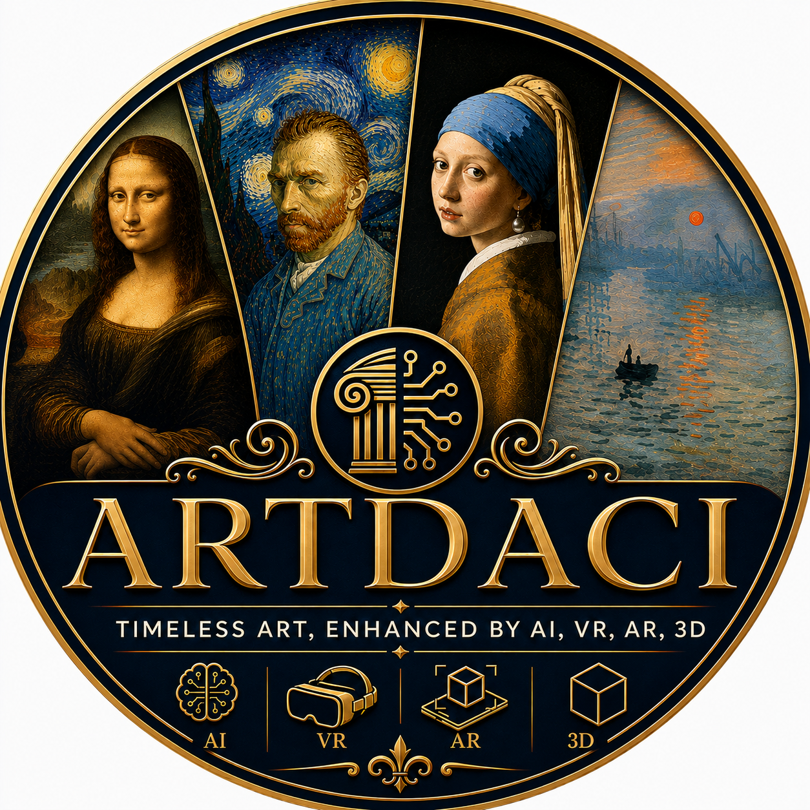
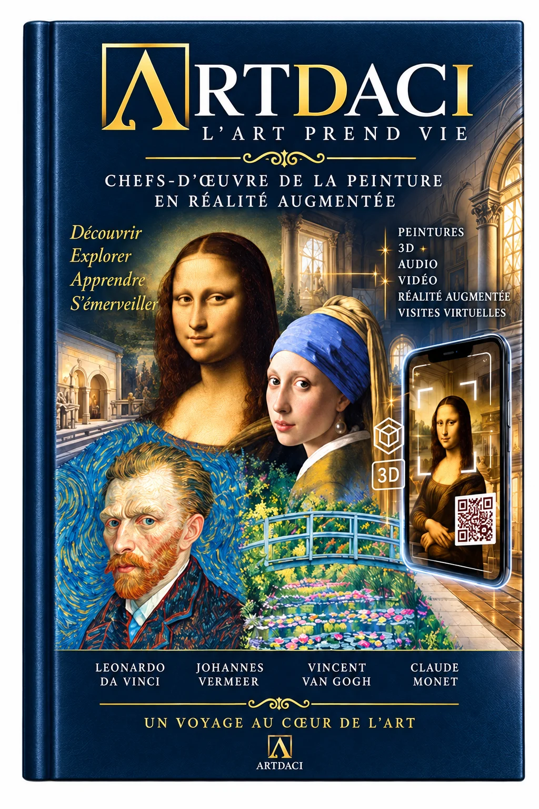
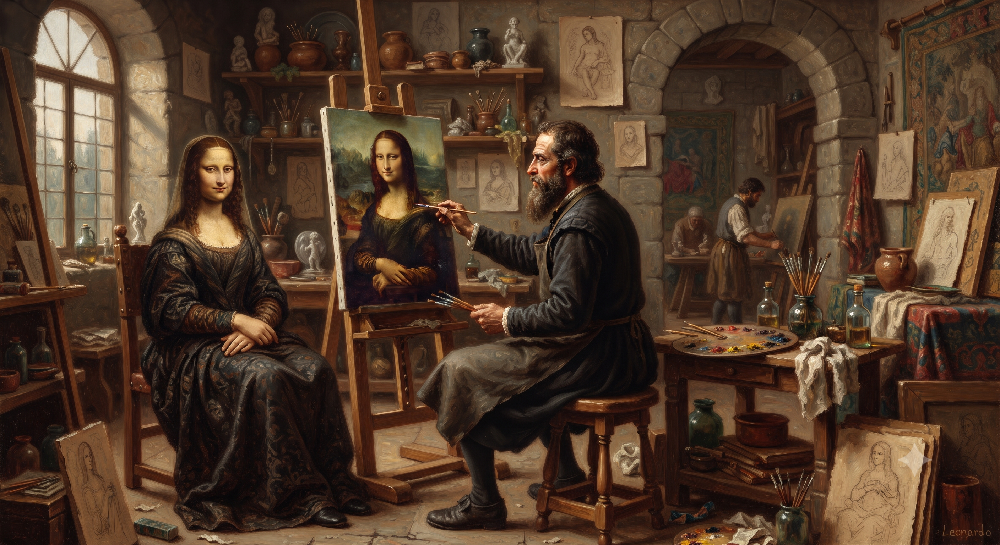

I have the printed book
- Open a supported page of your ARTDACI book.
- Follow the QR code or AR instructions with your phone.
- Discover the available stories, models and immersive experiences.

ARTDACI · Art beyond the frame
ARTDACI combines a printed art book with a digital world of artistic discovery. Explore masterpieces through their stories, connections, interactive 3D models and immersive experiences—with or without the book.
Art · Stories · Connections · AR · 3D · VR · Museums
Move your pointer over the card, or focus it and use the arrow keys.

The ARTDACI Book · Print meets immersive culture
Start here
Discover ARTDACI through its printed book or explore the collection directly online.
Featured Masterpieces
Every masterpiece invites a closer look. Discover these paintings through their details, historical contexts and available interactive experiences.
Explore ARTDACI
Explore the collection, connected knowledge, 3D, the Living Book, virtual worlds, the VR Gallery, artwork locations with GEO, the masters, VR cinema and QR code or AR experiences.
Search the collection and open the print, digital and immersive layers of each artwork.
02 Knowledge GraphNavigate artworks through artists, museums, places, themes, techniques and cultural links.
03 Interactive 3DInspect artworks, artists, ARTDACI objects and museum architecture as interactive 3D models.
04 Interactive BookTurn the pages of ARTDACI in 3D and launch media, models and immersive layers from the book itself.
05 Generative WorldsStep into immersive worlds inspired by the Louvre, Leonardo's studio and Van Gogh's Bedroom.
06 Immersive GalleryEnter virtual exhibitions, museum environments and artwork-centered spatial experiences.
07 Art and geographyExplore artworks, museums and their locations through maps, Google Earth and available Street View visits.
08 MastersMeet Leonardo, Vermeer, Van Gogh and Monet through guided 3D and narrative experiences.
09 CinemaWatch art stories, animations and interpretive media inside a dedicated immersive cinema.
The book’s QR codes open digital content. On a compatible smartphone, image recognition can reveal available AR experiences for supported paintings. Choose an artist:
The Masters
ARTDACI begins with four major figures whose works open distinct paths through portraiture, light, perception, emotion and the modern experience of painting.
From Page to Space
ARTDACI connects the stability of the printed page with a growing spatial and semantic continuum. Readers can move deeper without losing the artwork as their point of reference.
Museums & Places
ARTDACI connects paintings with the museums, rooms and geographic contexts that shape how they are encountered in the real world.
Virtual Museums
Explore museum environments, dedicated rooms and cross-museum experiences in VR.
Visit the VR Gallery →ARTDACI GEO
Move from artworks to museum locations and spatial experiences designed around place.
Explore GEO →Collection
A curated gallery of eight paintings from all four masters opens the visit. Reveal the remaining artworks whenever you wish, or search the entire collection.
The Spirit Behind ARTDACI
ARTDACI is dedicated to Leonardo da Vinci—not as the inventor of today’s technologies, but as a visionary whose studies of art, optics, anatomy, machines, movement and space embody the curiosity that makes new forms of cultural discovery meaningful.
“What else can we discover?”

Continue from the Printed Book
Scan from the printed ARTDACI book to continue online, access multimedia layers and move from reading into connected and immersive experiences.
Visitor help
Find the practical answers together in the Visitor Guide.
About ARTDACI
ARTDACI brings together art history, interpretation and digital exploration. It encourages close observation, intellectual curiosity and the discovery of connections between artworks, artists, techniques and places.